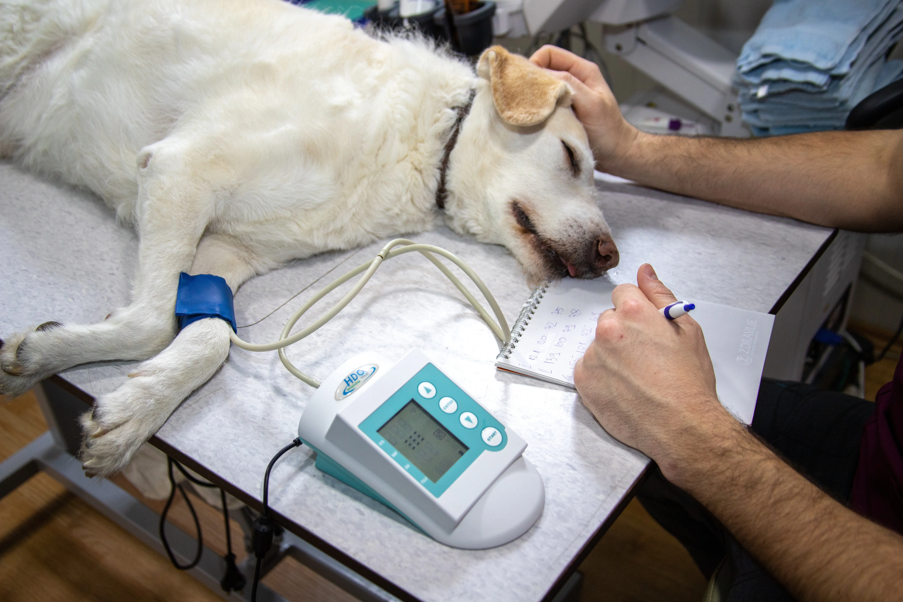
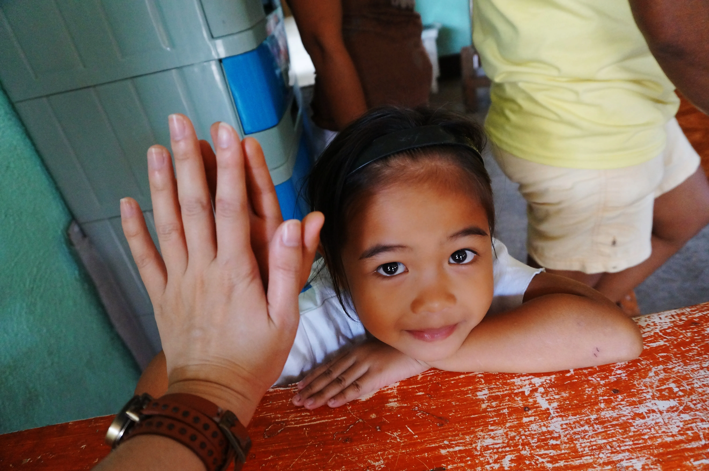

Campanhas de Adoção
Realizamos campanhas de adoção em diversas localidades, promovendo a conscientização sobre a importância da adoção responsável. Nossos eventos são projetados para conectar animais resgatados a famílias amorosas, garantindo que cada animal encontre um lar seguro e acolhedor.
Organizamos eventos regulares para encontrar lares amorosos para nossos animais resgatados, promovendo a adoção responsável e consciente.

Workshops Educativos & Desenvolvimento Social
Promovemos workshops interativos e palestras especializadas abordando temas cruciais como etologia animal, medicina veterinária preventiva e a importância da guarda responsável. Nossos especialistas compartilham conhecimentos práticos e teóricos, visando construir uma comunidade mais consciente e engajada no bem-estar animal.

Programa Integrado de Castração
Desenvolvemos um programa abrangente de esterilização que combina acessibilidade financeira com excelência médica. Oferecemos procedimentos subsidiados e gratuitos para comunidades vulneráveis, implementando um sistema eficaz de controle populacional que respeita tanto o bem-estar animal quanto a realidade socioeconômica local.

Unidade de Resgate e Pronto Atendimento
Nossa equipe especializada em resgates emergenciais opera 24/7, equipada com tecnologia de ponta e protocolos avançados de salvamento. Oferecemos suporte imediato em situações críticas, desde acidentes até maus-tratos, garantindo assistência médica qualificada e recuperação adequada.

Centro de Excelência Veterinária
Nossa equipe multidisciplinar inclui veterinários especialistas, cirurgiões e profissionais de reabilitação, oferecendo tratamentos integrados e personalizados. Utilizamos equipamentos modernos e técnicas inovadoras para garantir os melhores resultados em cada caso atendido.

Programa de Voluntariado Estruturado
Mantemos um sistema de voluntariado profissionalizado, com treinamentos específicos e divisão estratégica de responsabilidades. Nossos voluntários recebem capacitação contínua em áreas como manejo comportamental, primeiros socorros e organização de eventos, formando uma rede eficiente de apoio aos animais.